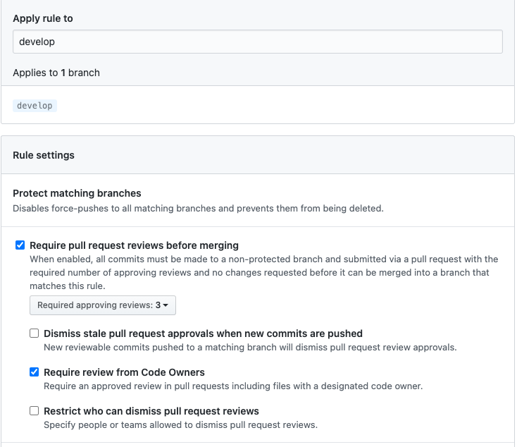
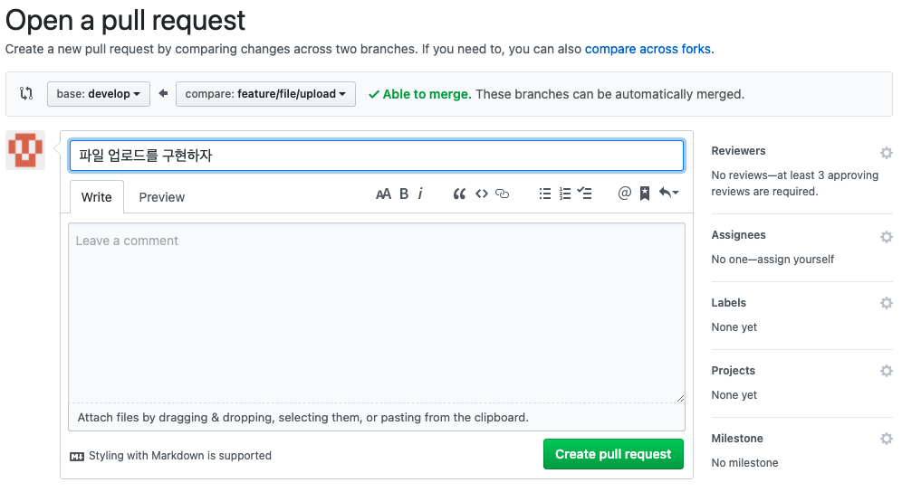
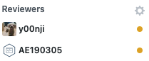
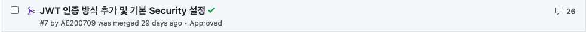
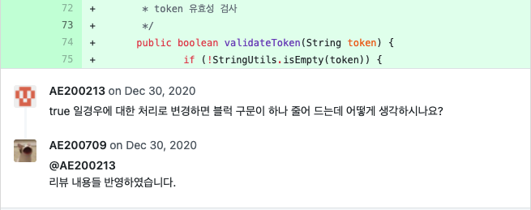
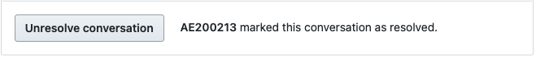
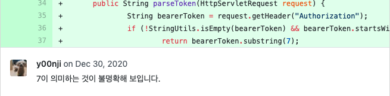
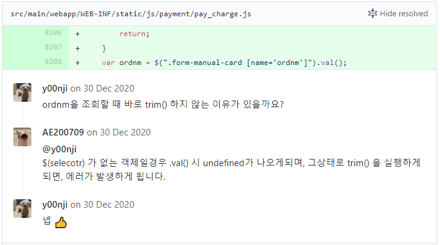

안녕하세요.
팀내에 코드리뷰 문화를 정착하기 위해 파일럿 프로젝트를 시도하게 되었습니다.
프로젝트 구성원들에게 물어보니 코드리뷰를 경험하지 못한 직원들도 있고 프로젝트 도중에 코드리뷰를 경험한 직원들이 있었습니다.
물론 정식적으로 이렇게 해야 한다라는 규칙도 없이 시니어개발자의 경험에 의해 코드리뷰 하는 수준이었죠.
프로젝트 초반에 코드리뷰 규칙을 세우고 어떻게 진행할지 팀원들과 논의를 진행하였습니다. 그 과정을 공유하고자 합니다.
프로젝트
프로젝트를 어떤걸 할까 고민하다가 새로운 서비스가 생길때 마다 각자만의 프로젝트를 생성하고 각자에 맞는 로직을 생성하다보니 개발하는 방식이 모두 달랐습니다.
저희는 공통된 프로젝트를 구성해두고 깃헙에서 포크를 하여 새로운 프로젝트를 생성하는 정형화된 프로젝트를 만들고자 하였습니다.
물론 핵심 로직들은 기준을 정해 놓고 비지니스 서비스를 바로 개발할수 있는 단계까지 만드는게 목표였습니다.
- Exception, DB Connect, Message 등 핵심로직 구성
- 프로젝트 구성에 필요한 리소스를 줄여서 개발시간 단축
- 개발자간의 개발소스 평준화
- 코드리뷰 문화 정착
- 환경설정 표준화
초기에 많은 부분을 잡고 가기 보다는 빠르게 구성하고 차후에 보완하는 방식으로 진행하는게 맞다라고 판단했고 그렇게 진입을 하였습니다.
요구사항
- OOP(객체지향) 코드
- TDD
- RESTFul API
- Spring Boot 2.3.3
- JPA or MyBatis
- Gradle
- Lombook
- Github
- 코드리뷰 정책
- JIRA
- PostgreSql
- Spring Security
진행하면서..
프로젝트 팀원은 총7명이고 깃 플로우기반 Pull Request 시 Approving 3개이상시 Merge가 될수있도록 설정을 해두었습니다.
- 커밋 전 린트 검사는 필수
- 피처 브런치에서 작업 후 Pull Request
- 디벨롭 머지 시 리뷰 요청
- 모든 맴버가 코드리뷰에 참여
- 3명의 동의가 있을시 디벨롭에 머지
리뷰 받을때는
- 적합한 리뷰인지 확인
- 리뷰 확인할때는 우선순위를 정하자
- 리뷰어 한테 꾸준히 리뷰 요청
리뷰 할때는
- 강요가 아닌 의견 전달을 목표로
- 회사 표준을 기준으로 가독성 향상을 목표로
- 경계 조건, Null 처리 같은 로직 오류 발견을 목표로
두근두근 코드리뷰 시작
시작은 Pull Request 부터
팀내에서 코드리뷰 기준이 개발 브랜치 머지이기 때문에 코드 리뷰를 위해서 개발 브랜치로 Pull Request을 생성 합니다.

Pull Request 할때도 어떠한 제목으로 할지 고민하시는 분들이 많으실 겁니다. 저희는 업무를 공수산정시 작성된 작업단위(기능)로 처리 하고 있기 때문에 PR 제목을 작업단위(기능)를 사용하고 있습니다. 근데 코드리뷰를 처음 하시는 분들은 처음에 좋은이름? 을 쓰고자 노력하겠죠.
그럼 어떠한 내용의 Pull Request 인지 한눈에 알아볼수가 없습니다.
규칙은 규칙이니 차츰 이부분도 경험을 통해 얻어지지 안을까 생각이 되네요.
리뷰어 선택은 필수~!!
코드리뷰를 누구나 할 수 있지만, Pull Request 생성할 때는 업무와 연관이 있거나 꼭 해주었으면 하는 사람을 추가 합니다.

리뷰어 요청을 할때 응답이 없으면 어떻게하지 ? 라고 생각해서 안하시는 분들이 있더라구요. 그리고 요청을 하다보니 상급자에게 리뷰요청이 많이 된 사실을 알게 되었습니다.
제가 보기엔 리뷰를 아직도 질책정도로 생각하는것 같아 보여서 안타까웠습니다.
꼭 다수의 리뷰어에게 많은 조언을 구하고 향후 개발에 필요한 정보를 습득하자~!! 라고 말해주고 싶군요. 머지않아 다들 이해하는 날이 오겠죠?
리뷰 응답은 필수!!
리뷰가 많아도 당황하지 말고 우선순위를 정해서 처리를 합니다.

리뷰 요청을 하고 리뷰응답이 이렇게 많이 올거란 생각을 해본적이 있으신가요? 매우 당혹스럽겠죠. 한 직원의 리뷰 요청에 갑자기 리뷰 응답과 수정요청 그리고 잘못된 부분이 이렇게 많이 나올수 있습니다.
그저 기능하나 추가했을뿐인데 .. 하지만 이러면서 조금씩 내 기술이 발전하겠구나~ 라고 생각하면 좀 나아지지 않을까요?
갑자기 많은 리뷰에도 당황하지 않고 본인의 개발이유를 적극적으로 의사전달을 하고 거기에 다른사람들 의견도 받아들이는 내용을 캡쳐해 봤습니다.
이러한 코드리뷰문화가 정착이 된다면 이상적인 개발이 가능하지 않을까? 라는 기대 아닌 기대를 해보게 되네요.
리뷰를 하면서 느낀점중에 제일 잘된점을 뽑으라면 리뷰의 토론입니다.
점차 토론의 장이 커질거 같아서 나름 흐믓 했네요. 그리고 구성원들이 하나둘씩 리뷰에 참여 하다 보니 점차 리뷰양도 늘어나고 의견도 많이 게시가 되기 시작했습니다.
처음에 머믓거리던 직원들도 점차 참여하기 시작했구요. 그래도 아직은 많이 부족해 보이긴 하네요.
리뷰한 내용에 대해서 완료 하였으면
리뷰 내용을 반영 했으면 반영한 내용을 리뷰어에 알려줍니다. 그리고 리뷰어는 리뷰 응답에 만족했다면 상태를 해결로 변경을 해주죠.
 
어떻게 보셨나요? 지금까지 팀에서 진행한 리뷰 방법과 구성원들이 가장 많이 하는 실수에 대해서 조사해 보았습니다.
물론 구성원 대부분이 개발경력이 짧고 아직 코드리뷰에 대한 경험이 많이 부족해서 이러한 결과가 나올수 밖에 없다라고 생각은 하고 있습니다.
뭐 이렇게 진행되다보면 다음 코드리뷰때엔 안나오지 않을까 생각되네요.
가장 많은 리뷰 내용은?
가장 많이 나왔던 리뷰내용이 네이밍룰 입니다.
나름 규칙을 정했고 규칙안에서 움직이고 있다라고 생각하고 있었는데 아직 주니어가 많다 보니 팀내에서도 리뷰전에 누군가는 네이밍에 대한 가이드를 해줬어야 하는데
부족했는지 각기 다른 목소리를 내고 있더라구요. 이 부분이 리뷰를 하면서 난감한 부분이었습니다.
기본적인 사안이긴 한데 코드컨벤션을 제대로 보지 않고 개발을 진행한다라는 점 입니다. 어느정도 익숙해 지기 까지 시일이 걸리겠지만
하나하나 집어주고 그러다 보니 리뷰 내용이 많이 발생하긴 했네요.
직원들 중엔 매직넘버를 무의식중에 사용하기도 한다는거죠. 소소한 일이겠으나 머지않아 이부분이 큰 이슈가 될거란것도 알아야 겟죠?
리뷰어는 로직을 보고 이해 할수가 없을땐 바로 리뷰요청을 하게 됩니다. 물론 소스를 보고 대부분 다 이해하기란 어렵겠죠. 아래와 같이 비지니스 로직이 포함된 소스에서는 리뷰요청을 하기 마련입니다.
답변을 듣고 소스에 대한 이해를 했을땐 위와 같이 이모티콘 하나정도는 날려주는 센스가 필요해 보이네요.
리뷰 끝?
리뷰가 끝나면 리뷰어들은 그냥 화면을 닫아버리는 경향이 있었죠. 그럼 리뷰 요청자들은 자기의 역할을 다했는데 왜 Approve 이 안되는지 궁금해 할겁니다.
그래서 리뷰어는 리뷰가 끝나면 바로 Approve 해주세요. 라고 초반엔 이야기 했지만 지금은 안해도 될만큼 익숙해 졌답니다.
그리고 리뷰가 완료되면 디벨롭에 머지함으로써 리뷰를 마무리 지었습니다. 과정을 설명하다 보니 내용이 많이 길었습니다.
코드리뷰문화가 사내에 정착이 될때까지는 많은 시간이 걸리겠지만 시작이 반이고 이러한 문화가 팀또는 파트내에 자리잡는다면 좀더 나은 개발자가 되리라 생각하면서
글을 남겼습니다.
코드 리뷰 적응 결과는..?
파일럿 프로젝트로 진행하기엔 기간이 너무 짧았습니다.
프로젝트 참여직원들이 1년동안 깃을 써왔고 제대로 브랜치 전략을 수행해 왔는지 궁금했는데 나름 잘 이용하고 있더군요.
제눈에 보이기엔 아직 Squash , Rebase, Fixup 등 커밋내용을 좀더 깔끔하게 할수 있지 않을까? 생각이 듭니다.
그래도 나름 노력들을 많이 하고 있어서 뿌듯합니다.
여러분들이 보시기엔 이정도야? 라고 생각하시겠지만 처음이고 또 시작이다 보니 만족스럽습니다.
한마디씩
코드리뷰를 경험하고자 하는 직원은 많았으나 업무유지보수 및 프로젝트 투입 인력으로 인해 많은 인원이 참여하지 못한 부분에 대한 아쉬움이 있었습니다. 하지만 이 문서를 토대로 많은 프로젝트와 유지보수 개발자들이 코드리뷰에 참여한다면 머지않아 팀내에 코드리뷰 문화가 정착하리라 생각 됩니다. 아쉬운 부분은 좀더 시간이 많이 주어졌다면 보다많은 소스를 분석하고 코드리뷰 사례를 좀더 보여드리지 않았을까 하는 생각 입니다.
코드리뷰를 통해, 경험이 부족하여 놓치고 지났던 문제가 생길법한 코드, 개선의 여지가 있는 코드를 알 수 있었고, 남의 코드를 보는 것을 통해 다양한 방식의 코드를 볼 수 있었습니다. 또한, 함께 일하고 있다는 느낌을 받아 좋았습니다.
코드리뷰를 하며 불필요한 코드를 많이 줄였고 메서드네이밍 또한 일관성있게 변경하면서 가독성이 좋아졌습니다 코드를 쓴 개발자에게도 앞으로 코드를 짜는데 많은 도움이 되었습니다
작성한 코드가 가독성에 대해서 알 수 있는 좋은 기회가 되었습니다.코드리뷰가 문화가 더욱 발전해서 팀 전체 개발 실력이 향상되었으면 합니다.
코드리뷰를 하면서 가장 인상적이었던건 팀원들이 작성한 소스가 모두에게 미리 공유가 된다는 점이었습니다. 추후에 내가 작성하지 않은 소스를 수정하려고 할때 이미 한번 파악했던 로직이기때문에 많은 시간이 절약되지 않을까 하는 생각이 들었습니다.코드리뷰를 통해 다른 팀원이 작성한 소스를 확인하고 생각해보고 로직을 분석하게 되면서 내가 짜지 않은 소스도 어느정도 미리 파악할수 있게되고 혼자만 개발하다보면 생각이 갇히는 경우가 많은데 여러 사람의 시선으로 다양한 관점에서 파악할 수 있게된다는점도 확실한 장점이라고 느껴졌습니다.
코드 리뷰 진행하면서 두가지 점이 좋았습니다. 첫째로, 코드 퀄리티에 더 신경쓰게 되었습니다. (원래 잘 작성해야했지만...) 남에게 보인다는 생각에 되는 대로 작성하기 보다는 한 번 더 생각하며 코드를 작성하였습니다. 둘째로, 함께 코드에 대해 이야기 하는 점이 좋았습니다. 더 좋은 코드를 작성해야 한다는 같은 목표 아래 `우리는 개발자`라는 결속력(?)이 생긴 것 같습니다. 앞으로 코드 리뷰 문화가 몸에 배어 더 좋은 결과물을 만들어 낼 수 있으면 좋겠습니다.
코드 리뷰를 진행함으로써 구현한 코드를 다시 한번 돌아보는 계기가 됐고 저의 리뷰 뿐 아니라 동료 개발자의 리뷰 또한 살펴보며 개선된 코딩 방향에 대한 배움을 얻는 시간이 되었습니다.
!Warning : 작성자가 직접 ETOOS TechBlog에 작성한 게시물 내용입니다.
게시물의 저작권은 ETOOS에 있습니다.